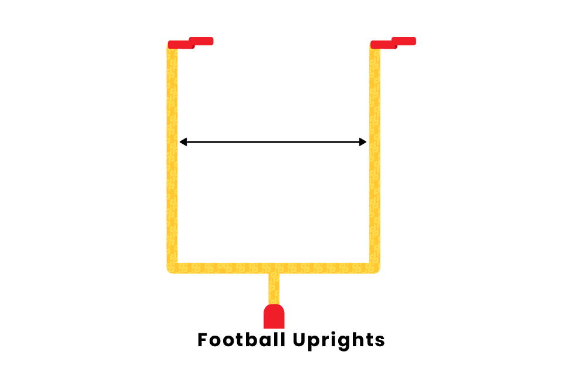

HOME
RULES
EQUIPMENT
HISTORY
TEAMS
SUBSCRIBE
The game
During the game of football, there are two teams with 11 players on each
side of the ball who play for four, 15 minute quarters.
To score a team has to move the ball downfield towards the other team's endzone.
They can do this by either running the ball until tackled
or by passing the ball to a teamate.
Downs
Downs are a crucial part of the game. The team on offence has to gain 10 yards. They have four chances, also known as downs, to get those 10 yards. If they get the 10 yards, the downs reset and the team have to move the ball another 10 yards. If the offense fails to get 10 yards, the team loses possesion of the ball.
Scoring
Touchdown (6 points)
A touchdown occurs when the team crosses into the opposing team's endzone with the ball.
They can do this by catching the ball or running the ball into the endzone.
Field Goal (3 points)
A team usually scores a field goal on fourth down, if they are close enough to the endzone.
The kicker kicks the ball through the uprights in the endzone.
Extra Point (1 or 2 points)
An extra point is scored by kicking the ball through the uprights after a touchdown.
Two points can also be earned by running or passing the ball into the endzone after the touchdown, but since this is more difficult, most teams will go for one point.
